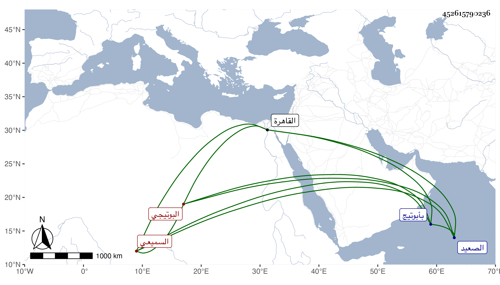

0902Sakhawi.DawLamic.ITO20230111-ara1.EIS1600.452615790236
Biography ID: 452615790236
306
مجمد بن أحمد السميعي نسبة لقرية من قرى أبو تيج يقال لها قرية بني سميع البوتيجي يعرف بالفرغل . رجل مجذوب له شهرة في الصعيد وغيره وزاوية بأبوتيج وأخرى بدوينة ، كان يتنقل بينهما وأكثر إقامته بالأولى وبها دفن وتحكي له كرامات . قدم القاهرة أيام الظاهر جقمق شافعا في ابن قرين العزال أحد مشايخ العربان فأجابه وإكرامه وأمر بانزاله عند الزين الاستادار ورجع فأقعد وأضر ومات رحمه الله .
